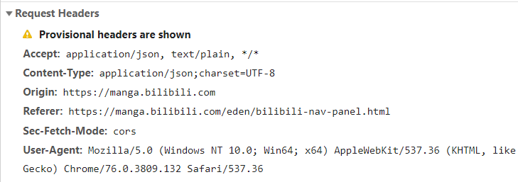

爬虫用久了，总是会被封的。——鲁迅
有些网站，特别是一些陈年老站，没有做过反爬虫机制的，我们可以尽情地爬，愉快地爬，把它们的底裤。。数据全都爬下来。最多出于情怀考虑，我们爬慢一点，不给它的服务器太大压力。但是对于有反爬虫机制的网站，我们不能这样。
最简单的反爬虫机制应该是U-A校验了。浏览器在发送请求的时候，会附带一部分浏览器及当前系统环境的参数给服务器，这部分数据放在HTTP请求的header部分。

我们要做的就是通过requests库设置我们的爬虫U-A。一般来说第三方库发送请求会有一个默认的U-A，如果我们直接用这个U-A，就等于直接告诉别人，我就是爬虫，快来禁我！有些网站如果不设置U-A是上不去的。requests库设置U-A也很简单。
def download_page(url):
headers={
'User-Agent': 'Mozilla/5.0 (Macintosh; Intel Mac OS X 10_11_2) AppleWebKit/537.36 (KHTML, like Gecko) Chrome/47.0.2526.80 Safari/537.36'
}
data = requests.get(url,headers=headers)
return data当然我们如果反复访问同一个网站，却一直使用同一个U-A，也是不行的。可以弄一个U-A池，然后每次访问时都从中随机抽取一个U-A。
一般来说，真人浏览网页的速度相对程序是很慢的，但是爬虫不一样。如果有人一秒钟访问了100次同一个网站，那几乎毫无疑问，这就是爬虫。一般来说，面对这种情况，我们有两种办法来解决。
第一种办法很简单。既然访问太快会被禁，那我访问慢点就好了啊。我们可以在每次访问完网站之后就设置一个time.sleep，限制访问速度。最好是用一台机器从慢到快访问，找到被封的阈值，然后以稍微低一点的速度进行访问。
第二种方法就是换ip。网站一般是通过ip来识别访问者的身份的，所以我们只要不停地更换ip，就可以伪装成不同的人。同一个ip一秒钟访问了100次很不正常，但是100个ip一秒钟访问100次就很正常了。那么我们如何更换ip呢？其实也不用真正更换我们的ip，而是通过代理ip转发我们的请求。不少网站提供了很多免费的代理ip，我们只要把它们爬下来，以备不时之需。不过很多代理ip寿命都不长，所以需要时常进行检测。requests设置代理ip也很简单。
proxies = {"http": "http://42.228.3.155:8080",}
requests.get(url, proxies=proxies)
有些网站，不管你做什么，登录还是访问页面，都需要输入验证码进行验证。在这种情况下，我们必须识别出验证码，才能爬取网站内容。有些简单的字母加数字的验证码可以用ocr进行识别，其他一些滑动验证之类的就需要其他的技巧来破解，这里就不详谈了。
登录很多时候是服务于网站功能的，反爬虫不过是顺带的目的。我们可以通过按F12检查开发者工具来看网站在登录时会发送什么数据，然后通过requests的相关函数模拟登陆。如果以后有时间会专门写一篇文章来详细说说。